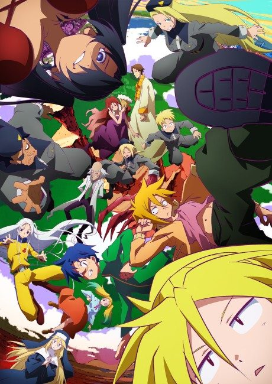
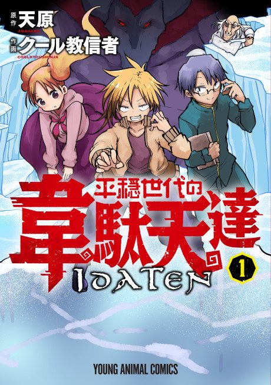

The Idaten Deities Know Only Peace
平穏世代の韋駄天達
After the anime, read the manga from Chapter 58.
7.4AniList score
—Animeter, no votes yet
11episodes
Is it worth pushing through?
Built from what visitors report across all 11 episodes.
Loading reports…Checking what other people said about this one.
Sign in above with your email to add your report.